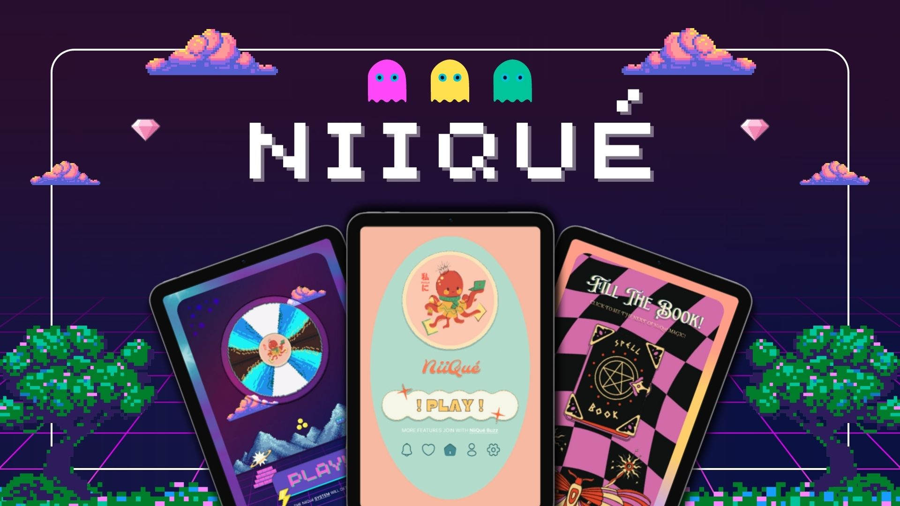
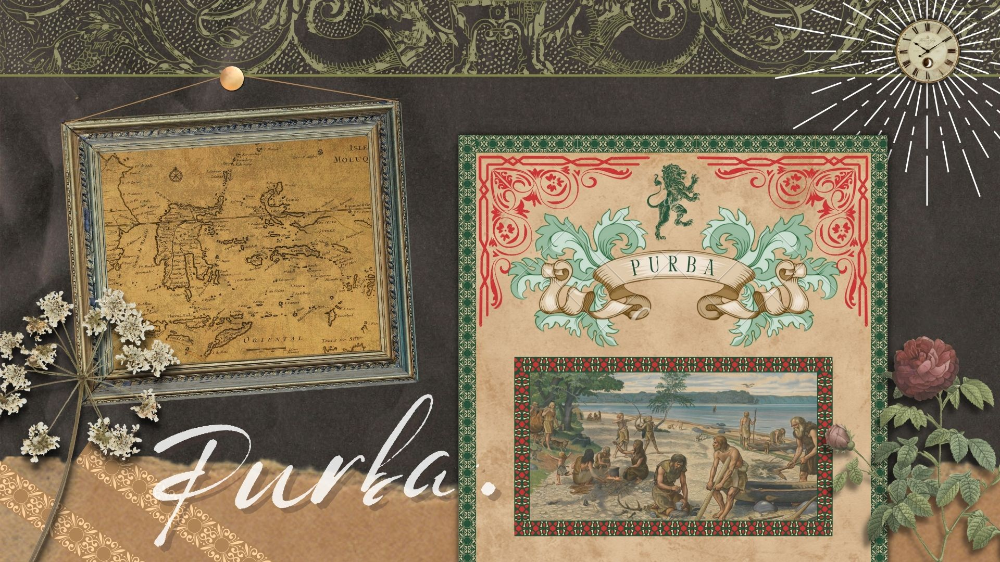

I Q L O X I C [0 4] S T U D I O



Student at Telkom Vocational High School Purwokerto. Social media will help you discover who I am. Let's get acquainted further through this space!
Download CVPerkenalkan, Saya Diva Faizah Dwiyanti. Saya lahir tepat pada 19 Januari 2007. Seorang dengan ketertarikan berlebih di bidang Design, membuat saya dapat merealistiskan berbagai "Dream Projects" terbaik serta mempersingkat waktu menuju 1st Goals!
Read MoreCritical thinking varies according to the motivation underlying it. When grounded in selfish motives, it is often manifested in the skillful manipulation of ideas in service.
Read MoreBasically this ability is related to various abilities such as listening, analyzing, researching, creativity, communication, teamwork and decision making.
Read MoreCognitive flexibility is described as the ability to adapt thinking from old situations to new situations, manage thinking habits, and adapt to them.
Read More